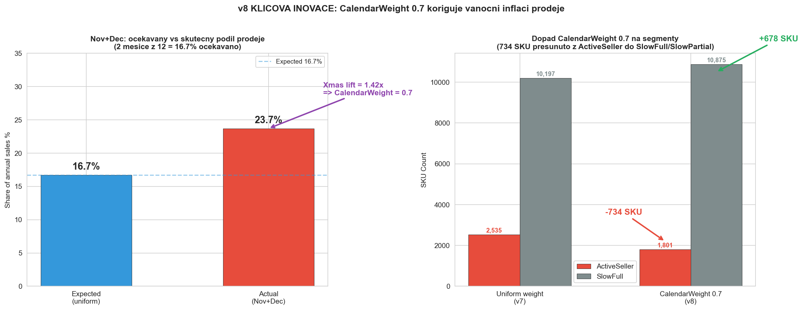
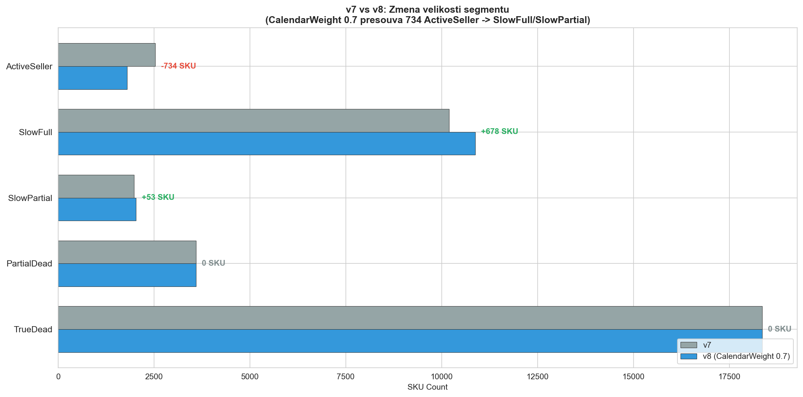
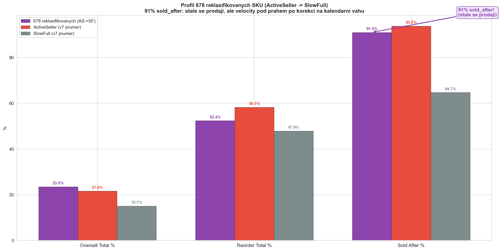
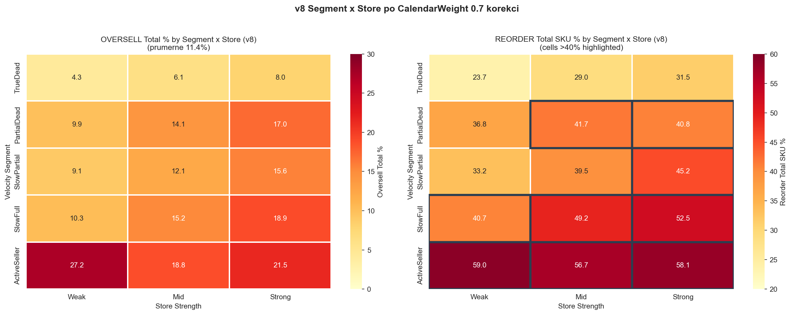
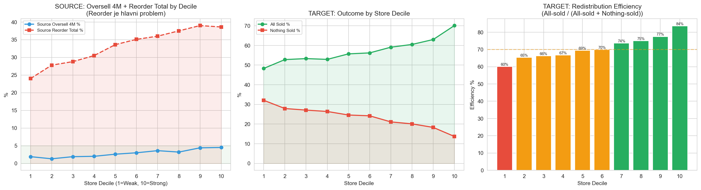
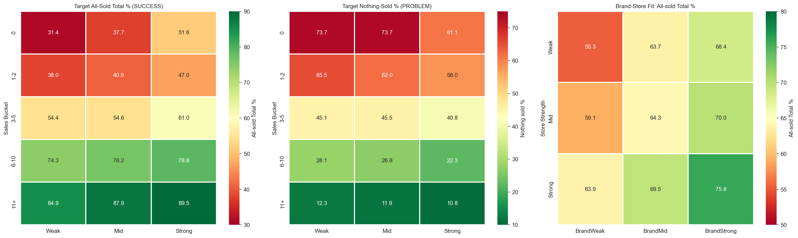
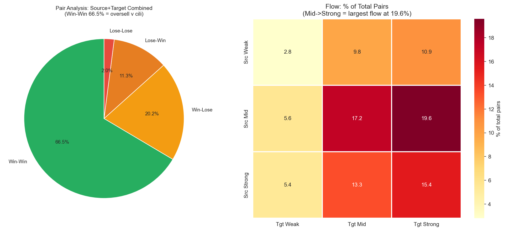
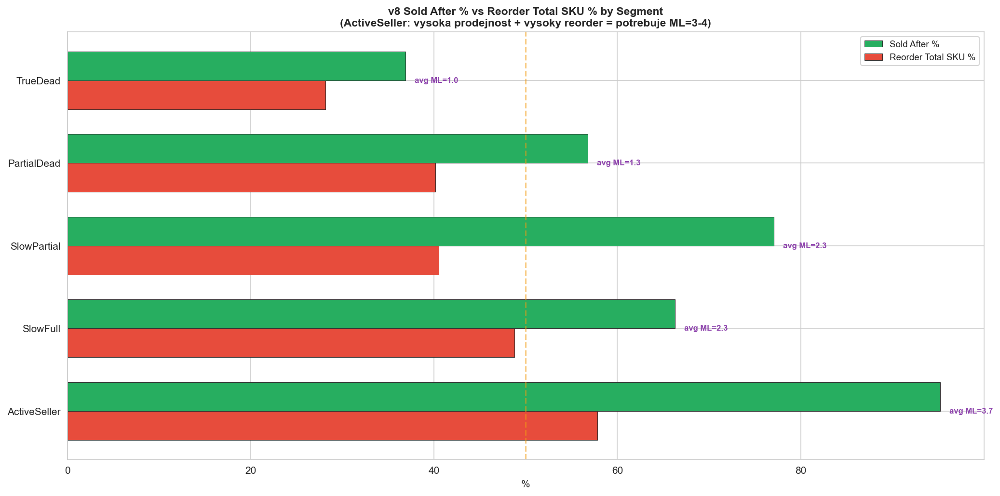
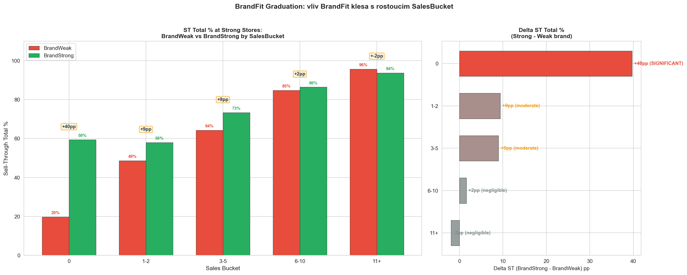

Consolidated Findings v8: SalesBased MinLayers (CalendarWeight 0.7) v8
CalculationId=233 | ApplicationDate: 2025-07-13 | Generated: 2026-03-22 19:32
v8 = CalendarWeight 0.7 na pololeti obsahujici Nov+Dec.
Nov+Dec maji 23.7% podil prodeje vs ocekavanych 16.7% (Xmas lift 1.42x).
Vaha 0.7 koriguje tuto inflaci.
734 ActiveSeller reklasifikovano na SlowFull/SlowPartial. SlowFull ML zvyseno.
Oversell v cili (3.0%). Reorder je hlavni problem (34.1% qty).
Oversell 4M je pouze 3.0% (1,464 qty).
Reorder: 16,615 kusu (34.1% objemu).
v8 inovace: CalendarWeight 0.7 spravne identifikuje 734 SKU, ktere byly nadsazene vanocni sezonou.
v8 KLICOVY PRISPEVEK: CalendarWeight 0.7 na pololeti s Nov+Dec koriguje
vanocni inflaci velocity. 678 SKU presunuto z ActiveSeller do SlowFull -
tyto SKU maji 91% sold_after (stale se prodaji!), ale jejich velocity byla umele navysena Vanoci.
SlowFull ML zvyseno (Weak: 1->2, Strong: 2->3) aby tato SKU byla chranena.
1. Overview
42,404
Redistribution pairs
48,754
Total redistributed pcs
Source: Celkove metriky - 4M a total
| Metric | 4 months | Total (~9M) |
|---|
| Oversell (qty) | 1,464 qty (3.0%) | 5,578 qty (11.4%) |
| Reorder (qty) | 7,980 qty (16.4%) | 16,615 qty (34.1%) |
1.1 CalendarWeight parametry
| Parameter | Value | Popis |
|---|
| Nov+Dec share (actual) | 23.7% | Skutecny podil Nov+Dec na celkovych prodejich |
| Expected share (uniform) | 16.7% | Ocekavany podil pri rovnomernem rozlozeni (2/12) |
| Xmas lift | 1.42x | Nasobek: actual / expected |
| CalendarWeight | 0.7 | Vaha aplikovana na pololeti s Nov+Dec |
| Reklasifikovano | 734 SKU | ActiveSeller -> SlowFull (678), SlowPartial (53), SlowBrief (3) |
v8 zaver: Nov+Dec share 23.7% je o 7.0 pp vyssi nez ocekavano.
CalendarWeight 0.7 snizuje vahu tohoto obdobi o 30%, coz korektniji odrazi celorocni velocity.
2. CalendarWeight 0.7: Dopad na segmentaci KEY v8
CalendarWeight 0.7 snizuje vahu pololeti obsahujiciho Nov+Dec.
Vysledek: 734 SKU, ktere mel v7 v ActiveSeller (diky vanocni inflaci velocity),
se po korekci posunuji do nizsich segmentu.

2.1 Zmena velikosti segmentu (v7 vs v8)

| Segment | v7 (SKU) | v8 (SKU) | Delta |
|---|
| ActiveSeller | 2,535 | 1,801 | -734 |
| SlowFull | 10,197 | 10,875 | +678 |
| SlowPartial | 1,980 | 2,033 | +53 |
| PartialDead | 3,599 | 3,599 | 0 |
| TrueDead | 18,355 | 18,355 | 0 |
2.2 Detail reklasifikovanych SKU
| Puvodni segment | Novy segment | SKU | OS Tot % | RO Tot % | Sold After % | Velocity pred | Velocity po |
|---|
| ActiveSeller | SlowFull | 678 | 23.5% | 52.4% | 91.0% | 0.559 | 0.428 |
| ActiveSeller | SlowPartial | 53 | 23.6% | 30.3% | 83.0% | 0.569 | 0.435 |
| ActiveSeller | SlowBrief | 3 | 0.0% | 25.0% | 33.3% | 0.527 | 0.369 |
678 SKU (ActiveSeller -> SlowFull): OS 23.5%, RO 52.4%, Sold After 91%!
Tyto SKU maji vyssi velocity pred korekci (0.559) nez po (0.428).
Po korekci spadaji pod ActiveSeller threshold, ale stale se prodaji s 91% uspecnosti.
Proto v8 zvysuje SlowFull ML (Weak: 1->2, Strong: 2->3).
2.3 Profil 678 reklasifikovanych SKU

2.4 Dopad na Pattern (pro referenci)
| Puvodni Pattern | Novy Pattern | SKU |
|---|
| Sporadic | Declining | 342 |
| Consistent | Declining | 63 |
| Declining | Consistent | 6 |
| Declining | Sporadic | 2 |
Beze zmeny:
| Pattern | SKU |
|---|
| Dead | 15,453 |
| Sporadic | 13,303 |
| Dying | 6,599 |
| Consistent | 646 |
| Declining | 356 |
3. v8 Segment x Store Detail (15 segmentu)

| Segment | Store | SKU | Oversell Total % |
Reorder Total SKU % | Sold After % | Redist qty |
|---|
| TrueDead | Weak | 5,227 | 4.3% | 23.7% | 32.6% | 6,238 |
| TrueDead | Mid | 8,206 | 6.1% | 29.0% | 37.2% | 10,026 |
| TrueDead | Strong | 4,922 | 8.0% | 31.5% | 40.8% | 5,996 |
| PartialDead | Weak | 939 | 9.9% | 36.8% | 48.8% | 1,124 |
| PartialDead | Mid | 1,599 | 14.1% | 41.7% | 57.8% | 2,056 |
| PartialDead | Strong | 1,061 | 17.0% | 40.8% | 62.2% | 1,484 |
| SlowPartial | Weak | 422 | 9.1% | 33.2% | 71.6% | 627 |
| SlowPartial | Mid | 792 | 12.1% | 39.5% | 72.6% | 1,175 |
| SlowPartial | Strong | 819 | 15.6% | 45.2% | 84.2% | 1,322 |
| SlowFull | Weak | 2,127 | 10.3% | 40.7% | 55.9% | 2,715 |
| SlowFull | Mid | 4,687 | 15.2% | 49.2% | 63.8% | 6,267 |
| SlowFull | Strong | 4,061 | 18.9% | 52.5% | 74.6% | 5,610 |
| ActiveSeller | Weak | 100 | 27.2% | 59.0% | 91.0% | 195 |
| ActiveSeller | Mid | 425 | 18.8% | 56.7% | 91.5% | 990 |
| ActiveSeller | Strong | 1,276 | 21.5% | 58.1% | 96.8% | 2,792 |
| TOTAL | 36,663 |
- | 48,617 |
MUST RAISE ML (reorder_tot_sku >50%): ActiveSeller+Weak (59.0%), ActiveSeller+Mid (56.7%),
ActiveSeller+Strong (58.1%), SlowFull+Strong (52.5%).
4. Source + Target: Sila predajni (decily)

| Metric | D1 (Weak) | D10 (Strong) | Trend |
|---|
| Source Oversell 4M | 1.9% | 4.5% | Oversell je v cili ve vsech decilech |
| Source Reorder Total | 24.0% | 38.6% | Silne predajny = vyssi reorder riziko |
| Target All-Sold Total | 48.3% | 70.1% | Silne predajny prodaji vse |
| Target Nothing-Sold | 32.1% | 13.7% | Slabe predajny = vice zaseklych zbozi |
5. Target: Sell-through analyza v8
5.1 Store Strength x Sales Bucket

| SalesBucket | Store | SKU | ST 4M % | ST Total % |
Nothing-sold % | All-sold Total % |
|---|
| 0 | Weak | 137 | 23.1% | 34.7% | 73.7% | 31.4% |
| 0 | Mid | 334 | 23.4% | 41.5% | 73.7% | 37.7% |
| 0 | Strong | 252 | 36.4% | 53.6% | 61.1% | 51.6% |
| 1-2 | Weak | 1,966 | 26.3% | 47.2% | 65.5% | 38.0% |
| 1-2 | Mid | 4,493 | 28.6% | 51.2% | 62.0% | 40.9% |
| 1-2 | Strong | 3,622 | 32.1% | 56.4% | 58.0% | 47.0% |
| 3-5 | Weak | 2,601 | 41.5% | 65.8% | 45.1% | 54.4% |
| 3-5 | Mid | 7,765 | 40.8% | 66.0% | 45.5% | 54.6% |
| 3-5 | Strong | 9,017 | 45.3% | 71.7% | 40.8% | 61.0% |
| 6-10 | Weak | 886 | 58.6% | 82.2% | 28.1% | 74.3% |
| 6-10 | Mid | 3,347 | 59.3% | 84.3% | 26.8% | 76.2% |
| 6-10 | Strong | 4,859 | 63.1% | 86.2% | 22.3% | 78.8% |
| 11+ | Weak | 179 | 73.8% | 92.0% | 12.3% | 84.9% |
| 11+ | Mid | 815 | 72.7% | 93.4% | 11.9% | 87.9% |
| 11+ | Strong | 1,358 | 77.0% | 93.9% | 10.8% | 89.5% |
11+ sales bucket = vyborny target: 84.9-89.5% all-sold, nothing-sold jen 10.8-12.3%.
Growth pocket = 11+ Strong (ML=4), reduction pocket = 0 Weak (ML=1).
5.2 Brand-Store Fit
| Store | BrandFit | SKU | All-sold Total % | Nothing-sold % |
|---|
| Weak | BrandWeak | 2,448 | 55.3% | 54.9% |
| Weak | BrandMid | 1,152 | 63.7% | 49.3% |
| Weak | BrandStrong | 2,169 | 68.4% | 42.4% |
| Mid | BrandWeak | 3,623 | 59.1% | 53.2% |
| Mid | BrandMid | 3,744 | 64.3% | 47.6% |
| Mid | BrandStrong | 9,387 | 70.0% | 41.1% |
| Strong | BrandWeak | 1,746 | 63.9% | 47.3% |
| Strong | BrandMid | 2,590 | 69.5% | 42.2% |
| Strong | BrandStrong | 14,772 | 75.8% | 35.4% |
6. Parova analyza + Flow matrix

6.1 Pair Analysis
| Outcome | Count | Share |
|---|
| Win-Win | 28,179 | 66.5% |
| Win-Lose | 8,565 | 20.2% |
| Lose-Win | 4,794 | 11.3% |
| Lose-Lose | 866 | 2.0% |
Win-Win = 66.5% (28,179 paru). Lose-Lose = jen 2.0%.
6.2 Flow Matrix
| Source Store | Target Store | Pairs | % of Total |
|---|
| Weak | Weak | 1,179 | 2.8% |
| Weak | Mid | 4,149 | 9.8% |
| Weak | Strong | 4,611 | 10.9% |
| Mid | Weak | 2,391 | 5.6% |
| Mid | Mid | 7,279 | 17.2% |
| Mid | Strong | 8,304 | 19.6% |
| Strong | Weak | 2,302 | 5.4% |
| Strong | Mid | 5,643 | 13.3% |
| Strong | Strong | 6,546 | 15.4% |
Nejvic paru: Mid->Strong (19.6%) a Mid->Mid (17.2%).
7. Sold After % by Segment (v8 adjusted)

v8 zaver: Po CalendarWeight korekci zustava ActiveSeller s nejvyssim sold_after a reorderem.
SlowFull nyni obsahuje dalsi 678 SKU s 91% sold_after - proto zvyseni ML.
Gradient sold_after -> reorder zustava konzistentni i po korekci.
8. Souhrnna tabulka v8
| Factor | v7 status | v8 zmena | Impact |
|---|
| CalendarWeight 0.7 | Novy | NOVA INOVACE | 734 SKU reklasifikovano, presnejsi velocity |
| ActiveSeller | 2,535 SKU | 1,801 SKU (-734) | Mensi, ale cistejsi segment |
| SlowFull | 10,197 SKU | 10,875 SKU (+678) | Vetsi segment s novym ML |
| SlowFull ML (Weak) | ML=1 | ML=2 (+1) | Ochrana 678 reklasifikovanych SKU (91% sold_after) |
| SlowFull ML (Strong) | ML=2 | ML=3 (+1) | Ochrana 678 reklasifikovanych SKU |
| Target ML | Beze zmeny | Beze zmeny | Target pravidla zustala stejna |
9. BrandFit Graduation by SalesBucket NEW
BrandFit je nejsilnejsi pri nizkem SalesBucket (0-2): delta +18-40pp ST. Pri 6+ je irelevantni.

9.1 BrandFit Delta Summary
| Sales Bucket | Delta ST (BrandStrong - BrandWeak) | Modifier BrandWeak | Modifier BrandStrong |
|---|
| 0 (no sales) | +18 to +40pp | -1 | +1 |
| 1-2 | +9 to +10pp | -1 | +1 |
| 3-5 | +7 to +9pp | -1 | 0 |
| 6-10 | +2 to +3pp | 0 | 0 |
| 11+ | <2pp | 0 | 0 |
9.2 Graduated Modifier Summary
| SalesBucket | BrandWeak modifier | BrandStrong modifier | Vysvetleni |
|---|
| 0 (no sales) | -1 | +1 | Obrovska delta (+18-40pp ST) - BrandFit je rozhodujici |
| 1-2 | -1 | +1 | Velka delta (+9-10pp ST) - BrandFit stale velmi dulezity |
| 3-5 | -1 | 0 | Stredni delta (+7-9pp ST) - BrandWeak penalizace, BrandStrong uz ne |
| 6-10 | 0 | 0 | Mala delta (+2-3pp ST) - BrandFit irelevantni |
| 11+ | 0 | 0 | Minimalni delta (<2pp ST) - BrandFit irelevantni |
Zaver: BrandFit modifier by mel byt graduovany dle SalesBucket, nikoliv plochý.
Pri 0-2 sales je BrandFit silny prediktor uspesnosti (+18-40pp ST delta).
Pri 6+ sales uz vlastni prodejni historie dominuje a BrandFit nema vliv.
Generated: 2026-03-22 19:32 | CalculationId=233 | v8 CalendarWeight 0.7 | ML 0-4 | Orderable min=1 | Bidirectional target